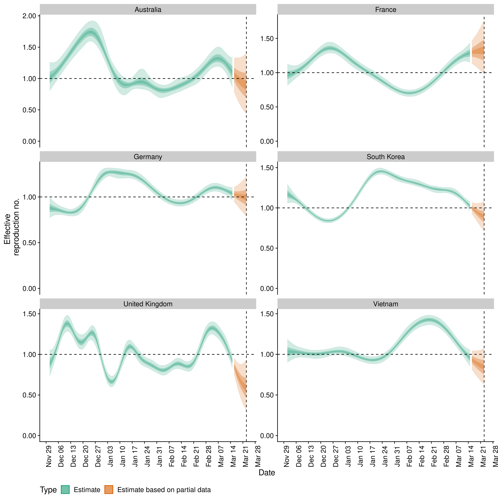

![]()

Reflections on two years estimating effective reproduction numbers
Over the last two years we have estimated reproduction numbers daily for several thousand locations, presented these estimates as a curated data set and visualised them at epiforecasts.io/covid. In this post we reflect on this project, summarising its utility, its integration with other projects, unanticipated challenges, and finally whether we would do it again.
31 March, in just under a weeks time, will mark the last day we are producing global national and subnational Rt estimates and nowcasts at https://epiforecasts.io/covid/posts/global/ - more than 2 years after we published the first set of estimates. This is a good opportunity to reflect on what we have learned from this, what went well and what went wrong, and what we would aim to do better next time.
An attempt to design a useful resource for situational awareness
We started this with the aim to provide both decision makers and the general public with real-time information on how the epidemic was progressing, initially in China, then in a small subset of countries, and ultimately in different parts of the world across different geographic scales. We felt at the time that the most useful quantity to estimate was the time-varying effective reproduction number (Rt), as it characterises the exponential behaviour of transmission, captures some of the known epidemiology of infectious diseases, can be linked to when infections occur in a meaningful way, and can be used to quantify the scale of the effort required to turn over an epidemic.
In order to estimate this from the surveillance case data being published by countries around the world and collated by Johns Hopkins University, we had to develop methods (S. Abbott et al. 2020; Sam Abbott, Hellewell, Thompson, et al. 2020) that account for reporting artefacts and delays whilst taking into account emerging insights on the epidemiology of SARS-CoV-2, especially incubation and generation times. Our initial methodology was developed in the first few months of the pandemic (released in the EpiNow R package1 (Sam Abbott, Hellewell, Munday, et al. 2020)), with our updated approach (released in the EpiNow2 R package2 (Sam Abbott, Hellewell, Sherratt, et al. 2020)) being developed after discussions with colleagues on the limitations of our original implementation (Gostic et al. 2020). These packages ended up being the workhorses behind the web site and were used to provide daily updates of the estimates for almost all countries of the world, as well as several subnational geographies that we added over time, and in both our research group and in independent research groups for other projects.
Assessing utility
So was it useful? Hard to tell. The website where we presented our estimates has had just over 500 thousand unique users since April 2020 with 1.2 million page views (with 800 thousand of these being for our US estimates, 120 thousand for our global estimates, and only 20 thousand for our methods - similar to the number of page view for our Swedish estimates). Usage has reduced over time but 8 thousand unique users still accessed the site in the last month.
The estimates themselves were processed regularly by various national international organisations such as the World Health Organization (WHO), especially in the early parts of the epidemic. That said, we don’t know whether any of this gave any policy maker any useful information that helped them make better decisions or helped inform members of the public about their individual risk. Even if our estimates did help inform decision makers it is also not clear how much the evidence from our estimates improved on that available from other sources.
In its current and now final form, the web site still provides a somewhat unique resource for tracking the epidemic as we are not aware of another dashboard that collates both national and subnational Rt estimates from across the globe. That said, other websites like ourworldindata or the UK dashboard present more comprehensive raw surveillance information in a more interactive way, arguably rendering large parts of our public facing work obsolete.
Feeding into analysis pipelines
A perhaps more valuable contribution of our work was the publication of the estimates in numerical form that we provided on GitHub alongside the visualisations on the web site. These were used in numerous publications, including some by researchers that did not interact with us, making it hard for us to assess whether they were fully aware of the limitations underlying the estimates which are outlined in our companion paper (Sam Abbott, Hellewell, Thompson, et al. 2020).
We used the estimates ourselves in various downstream analyses, e.g. to monitor or local variation3, to investigate surveillance bias (Sherratt et al. 2021), to estimate transmission advantage of new variants (for Alpha (Davies et al. 2021), and for Delta (Abbott et al. 2021)) or to estimate severity of infection4 over the course of the epidemic which was used in other work (Vöhringer et al. 2021) on the emergence and spread of the Alpha variant. Using routinely generated outputs of models as inputs to other models in such pipelines can be useful for multiple reasons. Primarily, this approach allows for rapid development when novel additions are needed in real-time with each step in the process dealing with some subset of the problem. It can also allow for access to novel methodology to be democratised in a way that is difficult with a complex model as the output can be used with potentially only a limited understanding of the implementation. Of course this can cause issues if the limitations of the method are poorly communicated. We have also observed our estimates being used by researchers from a range of backgrounds, with a range of tools at their disposal, that would be difficult to apply directly to the raw data prior to our domain knowledge based processing. Lastly, for complex problems chaining a series of models into a pipeline can reduce the computational burden and hence make analysis tractable when computational resources are limited. However, this approach may introduce bias to downstream results, potentially in ways that are difficult to diagnose or predict, as it can be difficult to fully incorporate uncertainty from all steps of the analysis pipeline into subsequent steps.
Unanticipated challenges
Our desire to provide a resource that was up-to-date, accurate and comprehensive posed some practical challenges. First of all, any epidemiological estimate is only ever as good as the data and method that is used to produce it. While our method was able to adjust for weekly effects, it hit its limits when e.g. reporting patterns changed or included unprecedented spikes on individual days. Additionally, estimating unobserved infections requires a good quantification of the incubation period, reporting delays, and generation time. These quantities can vary over time and by location, and are complex to estimate. For many regions and time periods specific estimates were not available and so we had to make additional assumptions to account for this. Most problematically, the quality, reliability and meaning of the data from different countries varies, and we did not have the capacity to manually curate or interpret the estimates we generated with respect to this underlying variation.
Throughout the pandemic we attempted to link with local stakeholders to address some of these issues but this proved to be diffcult. We approached this in two ways. Firstly, by approaching other researchers and trying to link with them to jointly manage estimates for a particular geography related to their interests. We also released our backend data cleaning code as an open source R package, covidregionaldata5 (Palmer et al. 2021), for use by others. This allowed several datasets to be contributed by others and these could then be processed using our tooling to produce estimates with no further involvement from those maintaining access to the data itself. Of these approaches, the second approach where we maintained the front-end and estimation pipeline whilst making it easy to contribute data (and providing a useful service, i.e data cleaning, whilst doing so) was the more successful but ultimately this was a very challenging aspect of the project and we were largely unable to manage these collaborations effectively enough for this to lead to lasting collaborations. Because we did not have the capacity to manually inspect the data and estimates on a daily basis we sometimes published nonsensical estimates. Lack of capacity also meant that we struggled to explain how these came about and this caused some consternation6 at times amongst visitors to the web site. This was a particular issue for subnational estimates in countries without a unified surveillance framework, such as the USA, where reporting patterns and practices changed state by state throughout the pandemic.
Other challenges were of more technical nature. Running a model daily on thousands of national and sub national data sets takes a huge amount of computation when an appropriately complex model is used. We benefited from a very generous grant from Microsoft AI for Health that enabled us to do this (and Microsoft, too, used our estimates in their own visualisations7), and it is the end of that grant that is prompting us to conclude this work. We also received a large amount of technical help from the UK Met Office in making our set up for distributed computing8 more sustainable which required a skillset that is difficult to acquire or sustain in academia.
Finally, as for many research groups responding to the pandemic, we have been working significantly over capacity since January 2020. Producing and maintaining these estimates, and the infrastructure that supports them required a significant number of person hours, particularly prior to extensive automation and improvements in the robustness of processes, often out of hours over a prolonged period. This workload often led to more traditional academic work not being done and was likely exacerbated by a lack of the skills required to run complex models in production environments. A particular, and initially surprising, demand on time was responding to feedback from users which could often be complex, linked to public health policy in their region of interest, and sometimes abrupt, aggressive, or extremely negative.
Back to 2020…would we do it again?
With all of this in mind we have been reflecting on whether we would do this again given the situation we were facing in early 2020 and, if yes, what we would do differently. Many of the challenges mentioned above were pretty much insurmountable, particularly around data quality and curation. Probably our most useful contributions from this work were in the UK where we knew the data and its limitations particularly well and interacted directly and frequently with policy makers.
That said, it would have been difficult to predict where the focus of our work would be when producing the initial estimates for China. In a perfect world we would have had methodologically robust, well evaluated, and production ready tools available to generate epidemiological estimates, and those trained to use them, in advance of a pandemic, such that these could be readily used by ourselves as well as teams everywhere in interaction with local policy makers and with a full understanding of the underlying data and its idiosyncrasies. It is great to see that there are now initiatives towards developing production ready tools for this purpose9, and we can only hope that these will be continued to put analytics of future epidemics on a more sustainable and reliable footing.
However, we have not yet seen similar progress being made on initiatives to improve the methodological basis for these tools, evaluating their performance in different scenarios (especially low resource settings), and ensuring that there exists a pool of researchers with the right skills to make use of them in real-time and who can also communicate directly with local policy makers. Maintaining, and growing, a pool of skilled researchers able to deploy tools for situational awareness, which requires a different skill set to traditional research, is a particular hurdle as it is poorly supported by current funding models. Without sufficient support some of the progress that has been made developing researchers with these skill sets during the pandemic will almost certainly be lost.
Ultimately, initiatives of this scale, whether worthwhile or not, are likely to be conducted again and used to inform public health decisions if another epidemic/pandemic occurs. It is in the best interest of the public health community, and the public more generally, that these are as good as possible and not limited by the ability of those implementing them, the availability of computational and personal resources, weaknesses in surveillance systems, or weaknesses in the underlying methodology.
Addendum 13/6/2022
Since we first published this blog post in March 2022 a few members of public health organisations and the general public have got in touch to let us know that they had found the estimates useful. We would like to thank those that contacted us, as this was great to hear. We were particularly pleased to be contacted by a colleague at the WHO to let us know that “The Rt estimates generated by the EpiForecasts team were used extensively by the WHO COVID-19 Analytics unit. They formed a core part of two routine analysis pipelines, namely variant transmissibility monitoring and risk assessments of national epidemiological trajectories, and were used in numerous ad-hoc analyses, including country deep-dives and impact evaluations of public health and social measures. These analyses were regularly presented to the incident management structure at WHO headquarters, including senior management, as well as regional and national WHO offices.” We have since restarted our analysis pipeline to produce estimates at the national level once a week, published on the GitHub repository but no longer featured on the EpiForecasts website.
Acknowledgments
We would like to thank Microsoft AI for Health for their generous computational support and the Met Office for providing technical assistance. We would also like to thank all those recording and aggregating surveillance data on which this work relies. Lastly, we would like to thank all co-authors and members of the CMMID COVID-19 working group for their contributions to this work.
References
Abbott, Sam, Joel Hellewell, James Munday, Robin Thompson, and Sebastian Funk. 2020. EpiNow: Estimate Realtime Case Counts and Time-Varying Epidemiological Parameters. https://doi.org/10.5281/zenodo.3746392.
Abbott, Sam, Joel Hellewell, Katharine Sherratt, et al. 2020. EpiNow2: Estimate Real-Time Case Counts and Time-Varying Epidemiological Parameters. https://doi.org/10.5281/zenodo.3957489.
Abbott, Sam, Joel Hellewell, Robin N Thompson, et al. 2020. “Estimating the Time-Varying Reproduction Number of SARS-CoV-2 Using National and Subnational Case Counts.” Wellcome Open Res. 5 (December): 112. https://doi.org/10.12688/wellcomeopenres.16006.2.
Abbott, Sam, Adam J Kucharski, Sebastian Funk, and CMMID COVID-19 Working Group. 2021. “Estimating the Increase in Reproduction Number Associated with the Delta Variant Using Local Area Dynamics in England.” bioRxiv, ahead of print, December. https://doi.org/10.1101/2021.11.30.21267056.
Abbott, S, J Hellewell, RN Thompson, et al. 2020. “Estimating the Time-Varying Reproduction Number of SARS-CoV-2 Using National and Subnational Case Counts (Version 1).” Wellcome Open Research 5 (112). https://doi.org/10.12688/wellcomeopenres.16006.1.
Davies, Nicholas G, Sam Abbott, Rosanna C Barnard, et al. 2021. “Estimated Transmissibility and Impact of SARS-CoV-2 Lineage b.1.1.7 in England.” Science 372 (6538). https://doi.org/10.1126/science.abg3055.
Gostic, Katelyn M, Lauren McGough, Edward B Baskerville, et al. 2020. “Practical Considerations for Measuring the Effective Reproductive Number, Rt.” PLoS Comput. Biol. 16 (12): e1008409. https://doi.org/10.1371/journal.pcbi.1008409.
Palmer, Joseph, Katharine Sherratt, Richard Martin-Nielsen, et al. 2021. “Covidregionaldata: Subnational Data for COVID-19 Epidemiology.” Journal of Open Source Software 6 (63): 3290. https://doi.org/10.21105/joss.03290.
Sherratt, Katharine, Sam Abbott, Sophie R Meakin, et al. 2021. “Exploring Surveillance Data Biases When Estimating the Reproduction Number: With Insights into Subpopulation Transmission of COVID-19 in England.” Philos. Trans. R. Soc. Lond. B Biol. Sci. 376 (1829): 20200283. https://doi.org/10.1098/rstb.2020.0283.
Vöhringer, Harald S, Theo Sanderson, Matthew Sinnott, et al. 2021. “Genomic Reconstruction of the SARS-CoV-2 Epidemic in England.” Nature 600 (7889): 506–11. https://doi.org/10.1038/s41586-021-04069-y.
Footnotes
Documentation here:https://epiforecasts.io/EpiNow↩︎
Documentation here:https://epiforecasts.io/EpiNow2↩︎
For example in this simple report:https://github.com/epiforecasts/covid19_uk_local↩︎
GitHub report and code to estimate reporting rates, infection-hospitalisation ratios, and infection-fatality ratios over time:https://github.com/epiforecasts/ons_severity_estimates↩︎
Documentation here:https://epiforecasts.io/covidregionaldata↩︎
This GitHub issue is a good example of the consternation caused by some of the more extreme data issues:https://github.com/epiforecasts/covid/issues/171↩︎
Microsoft AI COVID Dashboard which integrated our estimates:https://www.microsoft.com/en-us/ai/ai-for-health-covid-data↩︎
See their code contributions here: https://github.com/epiforecasts/covid-rt-estimates and here:https://github.com/epiforecasts/covid-rt-estimates-batch↩︎
For example the
epiverse:https://data.org/initiatives/epiverse/↩︎
Reuse
Citation
BibTeX citation:
@online{abbott2022,
author = {Abbott, Sam and Funk, Sebastian},
title = {Reflections on Two Years Estimating Effective Reproduction
Numbers},
date = {2022-03-25},
url = {https://epiforecasts.io/posts/2022-03-25-rt-reflections/},
doi = {10.59350/8apn9-8h048},
langid = {en}
}
For attribution, please cite this work as:
Abbott, Sam, and Sebastian Funk. 2022. “Reflections on Two Years
Estimating Effective Reproduction Numbers.” March 25. https://doi.org/10.59350/8apn9-8h048.